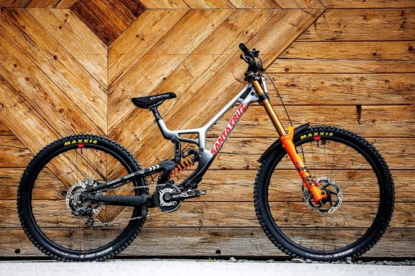
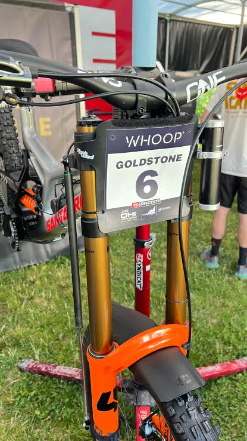
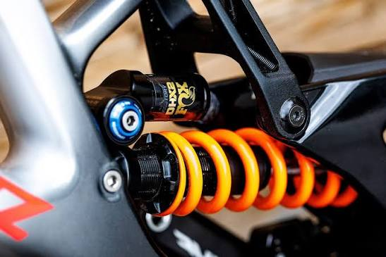

Cuadro y ruedas
Las bicicletas de downhill están diseñadas para soportar terrenos exigentes, descensos pronunciados y obstáculos.

Conoce las características de las bicicletas de descenso.
Las bicicletas de downhill están diseñadas para soportar terrenos exigentes, descensos pronunciados y obstáculos.

La suspensión ayuda a absorber los impactos y mantener el control de la bicicleta sobre terrenos irregulares.


| Componente | Función |
|---|---|
| Cuadro | Soporta los componentes de la bicicleta. |
| Suspensión delantera | Ayuda a absorber los impactos de la rueda delantera. |
| Suspensión trasera | Ayuda a absorber los impactos de la rueda trasera. |
| Frenos | Permiten controlar la velocidad. |